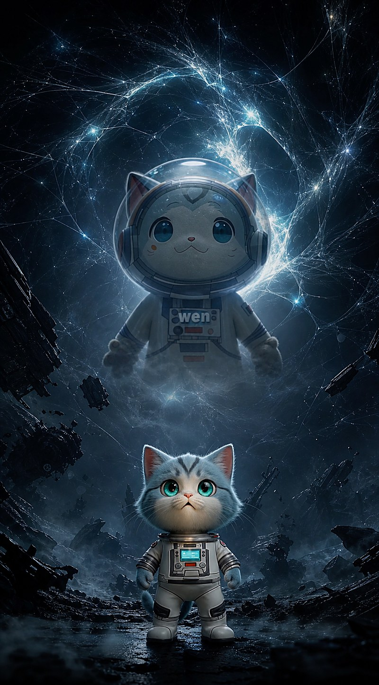

Video del Wen Open Lab▶
- 0 · Roadmap
- 1 · Ricevute e garanzia
- 2 · Royalty per i creatori
- 3 · Fatture B2B
- 4 · Ponte pagamenti
- 5 · Simulatore
- 6 · Devnet: ripetilo
- 7 · Cassa
- 7.1 · Sicurezza
- ✓ · Catena della fiducia
- ★ · Vantaggi e usi
- ✎ · Dieci guide
- ▶ · Video
- ? · Scoperte dei lettori
- 8 · Negozi: plugin e skill
Brevi spiegazioni per ogni parte del Lab. Ognuna dura circa trenta secondi; il codice dietro è aperto, così puoi verificare tu stesso ogni affermazione. I nuovi video appaiono qui nel giorno della loro uscita.
- Confronta WEN · Leggi la catena, apri la menteI nomi si possono copiare; i poteri dentro un token non si nascondono. Confronta WEN con qualsiasi token Solana, letto dal vivo dalla catena: 14 proprietà in parole semplici, i programmi attorno a WEN, 20 fatti dell'almanacco e le pagine IQ.wiki. Niente prezzi, nessun portafoglio.25 novembre 2026Leggi la notizia →
- From Orbit · Wen Counter: una cassa gratuita nel browser, 0 per vendita, solo ricezioneL'intera soluzione in 92 secondi: il pedaggio delle carte, una cassa nel browser (QR → ✓ Pagato), solo ricezione, oggi hai tenuto, molti portafogli, il PIN delle impostazioni, 57 verifiche aperte e Wen il gatto.16 novembre 2026Leggi la notizia →
- Useful Anomaly · Una cassa che non può inviare il tuo denaroNessuna connessione al portafoglio, nessuna chiave, tre richieste di lettura. Il proprietario imposta i portafogli dietro un PIN. 57 verifiche aperte: rompila se ci riesci, poi diccelo.16 novembre 2026Sicurezza e 57 verifiche →
- Paws Verified · 12,9% su un caffè? Oggi hai tenuto…I negozi pagano l'1–3% su ogni vendita con carta, fino al 12,9% su un piccolo caffè. Wen Counter mostra quanto hai tenuto, misurato dalle vendite confermate, con un CSV per il tuo commercialista.16 novembre 2026I numeri →
- Royalty scritte nell'NFT · Wen Open Lab 02/10Modello 2 · un transfer hook che puoi leggere prima di spostare. Le regole viaggiano con l'NFT, leggi prima di spostare, chi ci guadagna. Codice aperto, solo devnet, non sottoposto ad audit.14 novembre 2026Leggi la sezione →
- Signal Received · Una cassa gratuita nel browser: QR → ✓ PagatoWen Counter in 17 secondi: digita l'importo, mostra un QR Solana Pay, la catena conferma ✓ Pagato. Nessun app store, nessun dato di carta, 0 per vendita, solo ricezione.13 novembre 2026Apri Wen Counter →
- Una ricevuta che nessuno può falsificare · Wen Open Lab 01/10Modello 1 · un NFT Token-2022 con lo stesso layout usato da WNS. Dalla cassa al portafoglio, testato, non presunto, chi ci guadagna. Codice aperto, solo devnet, non sottoposto ad audit.12 novembre 2026Leggi la sezione →
- The Verified Chain: come WEN è passato da una poesia a un token (letto on-chain)Un sondaggio, un NFT della poesia su WNS (Token-2022), mille miliardi di WEN sullo SPL Token originale, e il mint letto on-chain allo slot 468049071. Affinato da una verifica più profonda; nulla cancellato.11 novembre 2026Leggi la sezione →
- Wen, SDK e Token-2022: aperti da usare, aperti da verificareCosa è aperto in Wen (Wen Program Library Apache-2.0, SDK JS MIT, Token-2022) e la fiducia n. 2: da dove vengono davvero le commissioni. WEN non aggiunge commissioni; la commissione di rete è di 5.000 lamport per firma.11 novembre 2026Leggi la sezione →
- Da dove vengono le commissioni? WEN, letto on-chainTre strati di commissioni: il token (WEN non ne aggiunge), la rete (5.000 lamport per firma) e i servizi (una commissione del pool, mostrata prima che tu firmi).11 novembre 2026
- Non fidarti. Controlla l'indirizzo. WEN in 10 secondiCodice aperto, nessuna commissione del token, 5.000 lamport per firma, e l'unico indirizzo da controllare: WENWENvqqNya429ubCdR81ZmD69brwQaaBYY6p3LCpk.11 novembre 2026
- WEN, letto on-chain: da una poesia a un tokenPoesia, un NFT su WNS (Token-2022), mille miliardi di WEN sullo SPL Token originale, letto on-chain: nessuna estensione, nessuna commissione, autorità revocate.11 novembre 2026
- Chi è Wen? 10 cose gratuite su GitHubChi è Wen: una moneta della comunità Solana nata da una poesia, e oggi un kit di strumenti aperto. Dieci cose gratuite su GitHub, dagli NFT-ricevuta a un ispettore di mint.6 novembre 2026
- Come controllare una ricevuta on-chain · Wen Open LabWen controlla un NFT-ricevuta come farebbe una macchina, poi sei modelli Token-2022 aperti e 37 verifiche LiteSVM, tutte verdi. Codice aperto con licenza Apache-2.0, solo devnet, non sottoposto ad audit.3 novembre 2026Leggi la sezione →
- Come trovare l'ID del contratto WenUn breve video: come trovare il vero ID del contratto Wen (WEN) su Solana.
I player si caricano da YouTube (modalità privacy avanzata) solo dopo che premi play. Tutti i video sono sul canale YouTube @wen-coin. Contenuto educativo, non consulenza finanziaria.
